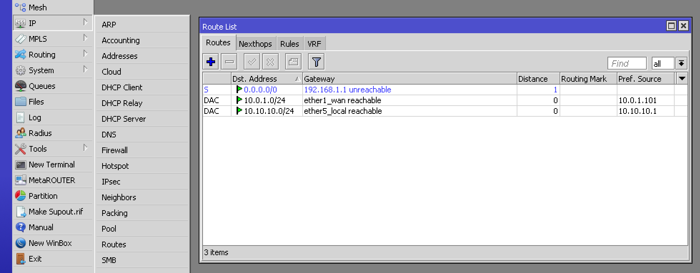

Lorrier LR2
Lorrier LR2 is an improved carrier grade gateway for building professional IoT network based on LoRaWAN™ protocol. This is a fully outdoor device intended to establish a wide coverage network by telecommunications operators and local network by individuals or IoT connectivity service providers.
This guide will help you set up the gateway for The Things Network.


Become an ambassador and help us support more devices! Drop us a line!
General Setup
This guide follows most of the LR2 Quick Settings Guide. For more details and troubleshooting see the documentation in the Lorrier LR2 Repository.
-
Connect the antenna to your LR2.
Connecting the LR2 to power (over ethernet) without antenna or appropriate attenuator connected will damage the device.
-
Connect your LR2 to the ethernet and power using the enclosed POE (Power Over Ethernet) adapter. Booting takes about 60 seconds.
The casing does not have external LEds. There have been cases where the LED on the POE adapter was on while the LR2 itself wasn’t. If the next steps fail, open the casing to verify the LEDs on the boards are also on. If they are not, connect the power directly to the board and order anew POE adapter.
-
The LR2 by default is configured with
192.168.1.2as static IP address. If this doesn’t match the IP range of the network you will connect it to, you will need to change this first.- Follow Change Static IP Address if needed.
-
If you’re not connected via Winbox tools already to change the IP address then do so now to change your password.
- Go to System > Password.
- The default password is
lorrier.
-
Change your BeagleBone Green (BBG) passwords.
-
Connect to the LR2 via SSH.
- As address use the LR2’s (new) static IP plus
:2222for the port. - The default username is
rootand passwordlorrier.
- As address use the LR2’s (new) static IP plus
-
To change the passwords type
passwd rootandpasswd debian.
-
-
Continue to Gateway Configuration.
Gateway Configuration
-
Open the LR2 web interface in your browser.
- As address use the LR2’s (new) static IP.
- You might need to authorize the safety certificate.
-
Login with the defaults username
adminand password `lorrier. -
You will be asked to select your Forwarder / Service. If you come back later, select Forwarder from the left menu. Then select The Things Network Servers EU 863-870 Mhz and click Save settings:

-
On the next screen let the LR2 generate a Gateway ID or set one manual and click Save settings:

-
When you get back to the dashboard, take note of the generated Gateway ID:

-
In the left menu, select Preferences to change the default password:

-
Go back to the Dashboard and click Apply settings & Reboot
-
Register your gateway using the Gateway ID.
👏 Your gateway is now connected to The Things Network!
Connect via Winbox Tools
While most configuration can be done via the LR2 web interface, some things like changing its static IP address or password need to be done via Winbox Tools.
- Download the Winbox tools via the links in the Routerboard configuration guide.
-
Use the Neighbors tab to find your LR2:

-
Enter your login as password and Connect.
The default login is
adminand the default password islorrier.
Change Static IP Address
To check the network’s IP range, connect your computer and find its IP address. The first 3 numbers have to match that of the LR2. If they don’t, you’ll need to change the static IP address for the LR2 to be able to connect to the internet.
- Connect to the LR2 via Winbox Tools.
-
Go to IP > Addresses and double-click the ether1_wan row:

-
Set Address to a static IP address within your network range and end with
/24. Set Network to the same address but with0as last number:
You probably also have a DHCP server on your network so make sure to use an IP outside the range it uses to hand out dynamic IP addresses.
-
Go to IP > Routes and double-click the 0.0.0.0/0 row:

-
Set Gateway to your network’s gateway IP address. In most cases this identical to your local IP with
1as last number.